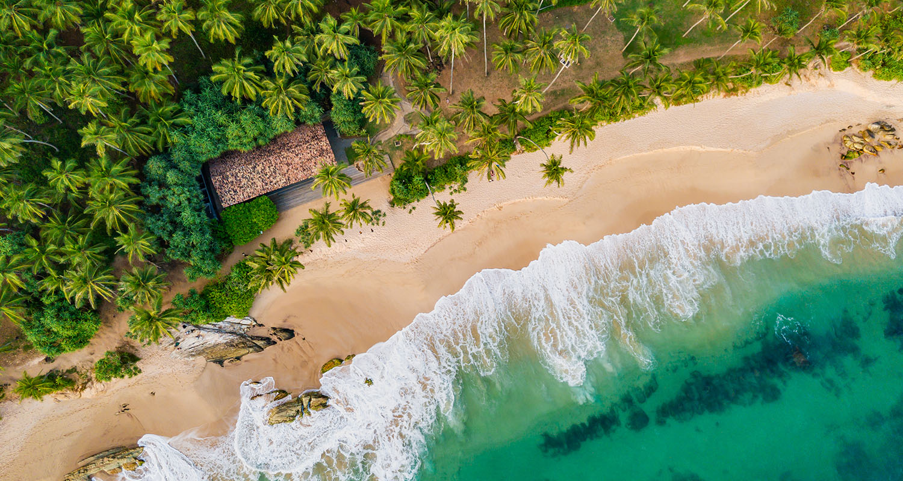
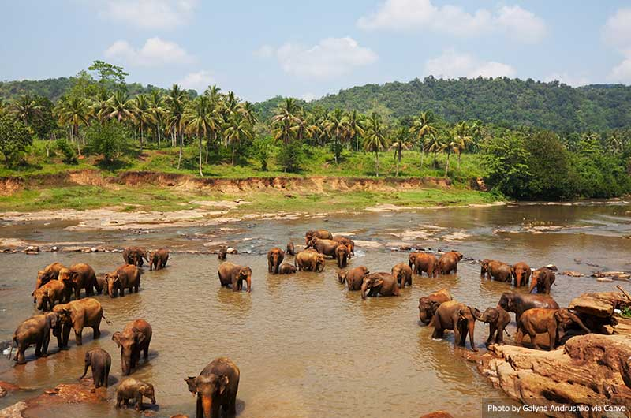
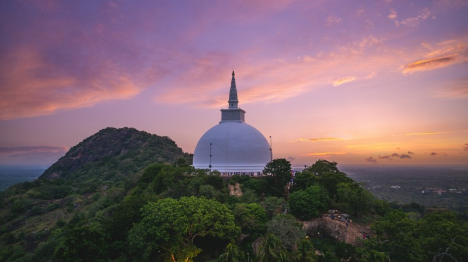
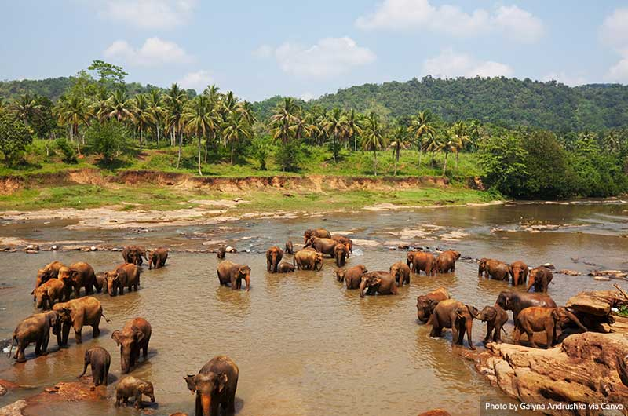
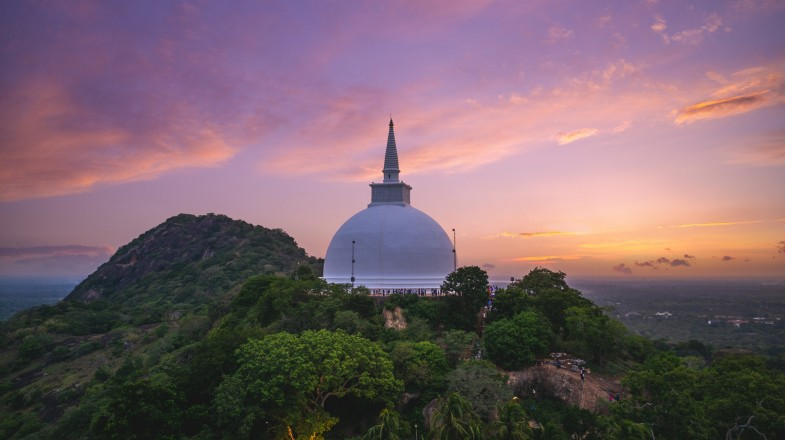

How to seek out Sri Lanka's most beautiful natural sights
From the rolling hills of the interior to the palm-fringed beaches that line the coast, Sri Lanka is a country that seems to have it all. But it's the island's natural beauty that really sets it apart. Here are some of the most beautiful natural sights in Sri Lanka that you won't want to miss.
- Horton Plains National Park
- Sinharaja Forest Reserve
- Yala National Park
- Knuckles Mountain Range
- Udawalawe National Park
Located in the central highlands of Sri Lanka, Horton Plains National Park is a protected area that's home to a diverse range of flora and fauna. The park is known for its stunning landscapes, which include rolling hills, deep valleys, and dense forests. One of the park's most famous attractions is World's End, a sheer cliff that drops off into the valley below. The park is also home to a number of beautiful waterfalls, including Baker's Falls and the stunning Bambarakanda Falls.
Sinharaja Forest Reserve is a UNESCO World Heritage Site that's home to one of the last remaining tracts of tropical rainforest in Sri Lanka. The reserve is home to a diverse range of plant and animal species, including many that are endemic to the island. Visitors to the reserve can explore its dense forests, which are home to a number of beautiful waterfalls and streams. The reserve is also a great place for birdwatching, with over 140 species of birds recorded here.
Yala National Park is one of the most popular national parks in Sri Lanka, and for good reason. The park is home to a wide range of wildlife, including elephants, leopards, and sloth bears. Visitors to the park can take a safari tour to see these animals up close, as well as explore the park's beautiful landscapes, which include dense forests, grassy plains, and sandy beaches. The park is also home to a number of ancient ruins, including the famous Sithulpawwa Rock Temple.
These are two of the largest national parks in Sri Lanka. Big game can be sighted in both places but Yala opens in new window— the further of the two from Colombo has the highest density of leopards, while Wilpattu opens in new windowis commonly associated with the sloth bear.
The Knuckles Mountain Range is a rugged mountain range that's located in the central highlands of Sri Lanka. The range is home to a number of beautiful hiking trails, which wind their way through dense forests, past cascading waterfalls, and up to stunning viewpoints. The range is also home to a number of picturesque villages, where visitors can experience traditional Sri Lankan culture and hospitality.
Udawalawe National Park is one of the best places in Sri Lanka to see elephants in the wild. The park is home to a large population of elephants, as well as a number of other wildlife species, including leopards, water buffalo, and crocodiles. Visitors to the park can take a safari tour to see these animals up close, as well as explore the park's beautiful landscapes, which include grassy plains, dense forests, and meandering rivers.
 



Cultural Heritage
Experience the rich cultural heritage of Sri Lanka, which is deeply rooted in its history, religion, and traditions. Explore ancient cities such as Anuradhapura and Polonnaruwa, which are UNESCO World Heritage Sites, showcasing magnificent temples, stupas, and ancient ruins. Witness traditional rituals, festivals, and ceremonies that reflect the diverse cultural tapestry of the island.
Natural Landscapes
Discover the breathtaking natural landscapes of Sri Lanka, which range from lush rainforests and cascading waterfalls to scenic mountains and pristine beaches. Embark on wildlife safaris in national parks like Yala and Wilpattu to encounter diverse flora and fauna, including elephants, leopards, and endemic bird species. Trek through verdant tea plantations in the hill country and relax on the golden sands of palm-fringed beaches along the coastline.
Adventure Tourism
Indulge your adventurous spirit with a plethora of adrenaline-pumping activities available in Sri Lanka. Surf the waves in renowned surf spots like Arugam Bay, hike to the summit of Adam's Peak for a breathtaking sunrise view, or go white-water rafting in the rapids of Kelani River. Experience the thrill of diving amidst vibrant coral reefs and shipwrecks, or soar through the air on a thrilling zip line adventure amidst lush forests.
Ayurvedic Wellness
Immerse yourself in the ancient healing traditions of Ayurveda, which have been practiced in Sri Lanka for centuries. Rejuvenate your mind, body, and soul at Ayurvedic retreats and spas located amidst tranquil natural surroundings. Experience holistic treatments such as herbal massages, yoga, and meditation to achieve inner balance and harmony. Learn about Ayurvedic principles and lifestyle practices to promote overall well-being and vitality.
Culinary Experiences
Embark on a gastronomic journey through the flavors of Sri Lankan cuisine, which is renowned for its aromatic spices, tropical fruits, and diverse culinary influences. Sample mouthwatering dishes such as rice and curry, hoppers, and kottu roti, which showcase the rich culinary heritage of the island. Explore bustling food markets, street stalls, and traditional eateries to savor authentic Sri Lankan flavors and indulge in culinary delights.
Community-Based Tourism
Engage in community-based tourism initiatives that offer authentic cultural experiences while supporting local communities and preserving traditional livelihoods. Stay in homestays and guesthouses run by local families to immerse yourself in the daily life and customs of Sri Lankan villagers. Participate in cultural exchange programs, handicraft workshops, and village tours to gain insight into the rich cultural heritage and lifestyles of rural communities.